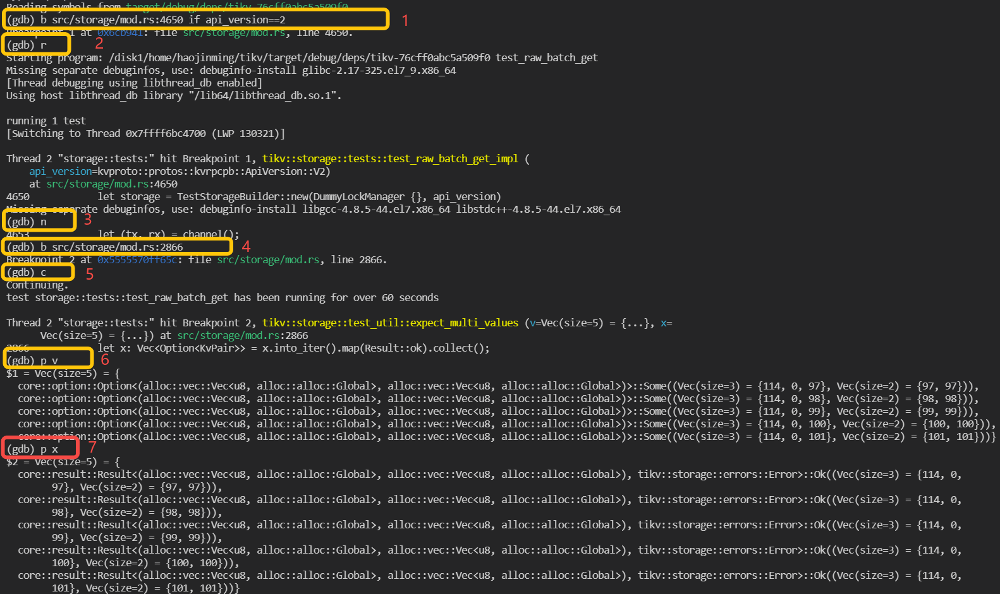
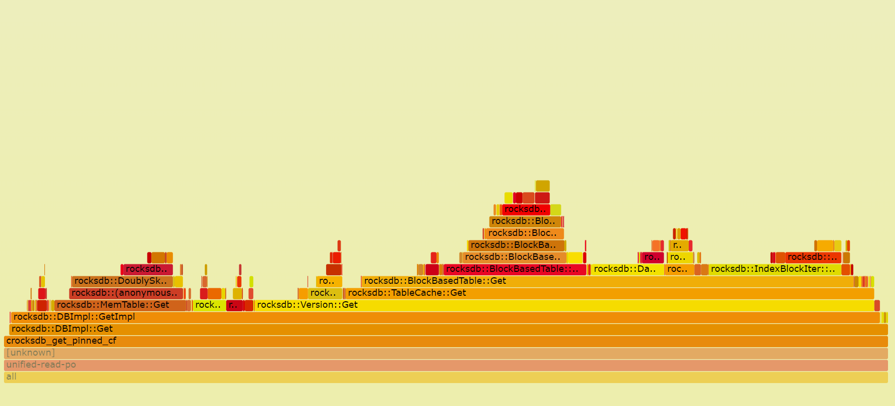

Debug and Profile
In previous chapter, we introduce how to build TiKV from source, and in this chapter, we will focus on how to debug and profile TiKV from the view of a developer.
Prerequisites
- rust-gdb or rust-lldb
GDB and LLDB are commonly used for debugging a program.rust-gdbandrust-lldbare both installed withrustuptogether, however, they depend onGDBandLLDB, which are need to be installed by yourself. Here is the installation of GDB/LLDB.
Ubuntu: sudo apt-get install gdb/lldb CentOS: sudo yum install gdb/lldbGDBandLLDBcan also be used to debug rust program.- Basically,
rust-gdbis a wrapper that loads external Python pretty-printing scripts into GDB. This is useful (and somewhat necessary) when debugging more complex Rust programs because it significantly improves the display of Rust data types.rust-lldbis similar. Sorust-gdbandrust-lldbare recommended. - About how to choose between
rust-gdbandrust-lldb, it depends on the platform you are using and the familiarity of these tools. If you are new hand on the debugging tools,rust-lldbis recommended on MacOS andrust-gdbis recommended on Linux, like Ubuntu and CentOS.
- perf
Perf is common Linux profiler. It's powerful: it can instrument CPU performance counters, tracepoints, kprobes, and uprobes (dynamic tracing). It can be installed as following:
Ubuntu: sudo apt-get install linux-tools
CentOS: sudo yum install perf
For simplicity, we will introduce the debugging with rust-gdb, audience can also use rust-lldb.
Debug TiKV with rust-gdb
Debug a unit test binary in TiKV
- Build the unit test binary, for example we want to debug the test case: test_raw_get_key_ttl
Firstly, we can get the binary file with cargo command, like:
cargo test -p tikv test_raw_get_key_ttl
A binary file located in target/debug/deps/tikv-some-hash will be produced.
- Debug the binary with rust-gdb:
rust-gdb --args target/debug/deps/tikv-4a32c89a00a366cb test_raw_get_key_ttl
- Now the standard gdb interface is shown. We can debug the unit test with gdb command. Here are some simple commands.
- r(run) to start the program.
- b(break) file_name:line_number to set a breakpoint.
- p(print) args to print args.
- ls to show the surrounding codes of breakpoint.
- s(step) to step in the function.
- n(next) to step over current line.
- c(continue) to continue the program.
- watch to set a data watch breakpoint.
An example of debugging an unit test named test_raw_batch_get is as following:
- Build
tikvunit test binary withcargo test -p tikv test_raw_batch_getand binary is located intarget/debug/deps/tikv-<somehash> - Launch the binary with
rust-gdb
rust-gdb --args target/debug/deps/tikv-<somehash> test_raw_batch_get
- debug

As the marks shown in above screenshot, firstly, a breakpoint is set in line 4650 of file src/storage/mod.rs and set condition that api_version == 2, which means program only pause when it hit here and the variable api_version is equals to 2. Then run is executed and the program start to run. The following steps are some examples to use gdb commands to execute the step over and print.
Debug TiKV cluster with specified tikv-server binary
- Build tikv-server binary with the guide in previous chapter.
- The binary files are located in
\${TIKV_SOURCE_CODE}/target/debug/tikv-server. Debug binary is recommended as it keep much useful debug info, such as codes, lines, local variables. - TiUP is recommended to deploy a TiKV cluster. It's easy to deploy a local TiKV cluster with tiup playground. Please refer to Get start in 5 minutes. With TiUP, we can also specify the tikv-server binary file during deploy. The following is an example:
TIKV_BIN=~/tikv/target/release/tikv-server
tiup playground v5.0.4 --mode tikv-slim
--kv 3 --kv.binpath ${TIKV_BIN} --kv.config ./tikv_rawkv.toml
- Now we get one TiKV cluster with three TiKV virtual nodes and one PD node. we can use
rust-gdbto attach thetikv-serverprocess.
rust-gdb attach `pid of tikv-server`
pid of tikv-server can be obtained with the following command:
ps -aux|grep tikv-server
Now the standard GDB interface is shown. The following steps are just the same as debugging unit test binary.
Profiling TiKV
When we want to find the CPU bottleneck of one program, we can use perf Linux profiler to find the procedures and how much CPU time they are consuming. It can also be used for profiling TiKV. FlameGraph can also be used to visualize stack traces with interactive SVGs. FlameGraph can be downloaded from here:
git clone https://github.com/brendangregg/FlameGraph.git
Here is one example:
- Recording performance data with
perf
perf record -g -p `pidof tikv-server`
- Generate text report
perf report
- Parse the perf data with script.
perf script -i perf.data &> perf.unfold
- Generate the flame graph
./stackcollapse-perf.pl perf.unfold &> perf.folded
./flamegraph.pl perf.folded > perf.svg
- We can open the
svgfile withChromeor other browsers. With the flame graph, we can see the performance data more intuitively.
